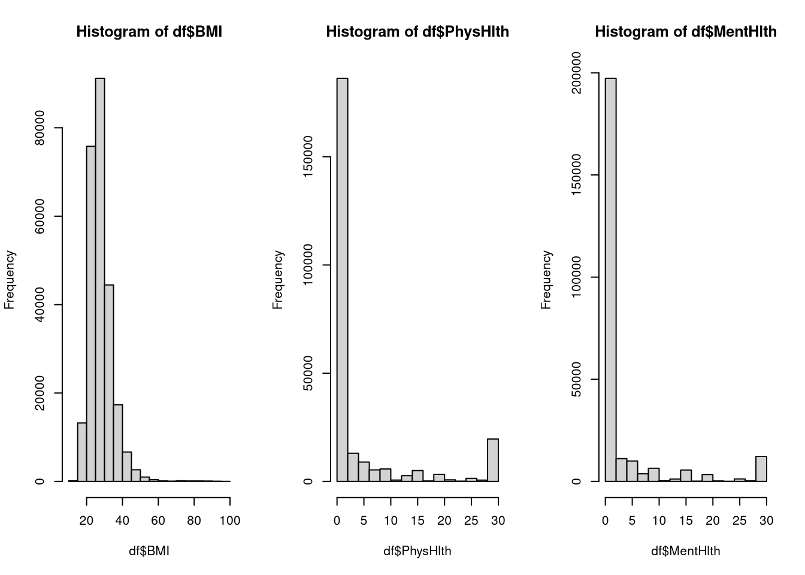
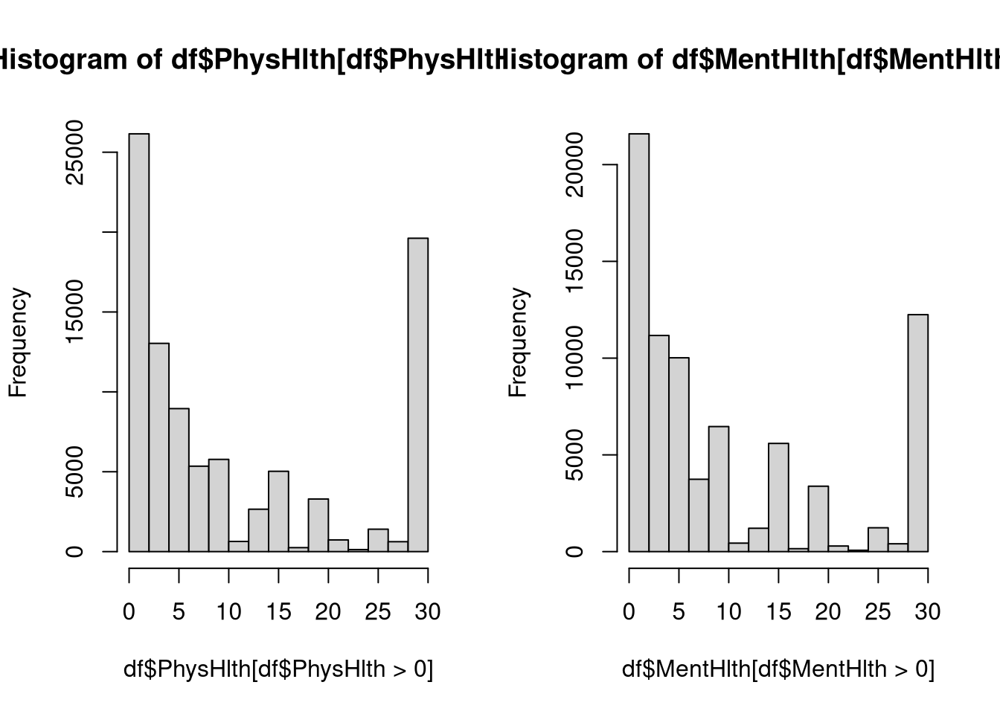
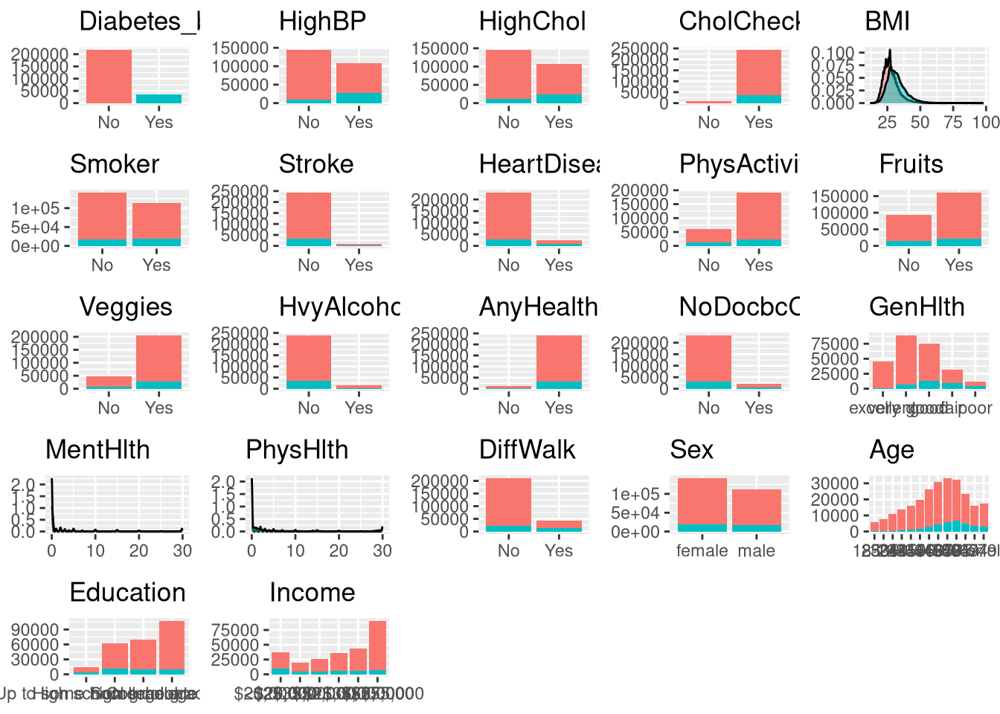

library(tidyverse)
library(janitor)EDA
Introduction
Diabetes is a chronic disease affecting more than 10% of adults worldwide. It is characterized by the body’s inability to produce or properly use insulin, a hormone that regulates blood sugar. Diabetes is a lifelong condition that often leaves a person reliant on external insulin sources or other glucose-lowering treatments, and it can predispose individuals to worse health outcomes. As with most chronic diseases, early diagnosis and prevention are vital to reducing health risks.
The dataset used here is a cleaned version of the CDC’s Behavioral Risk Factor Surveillance System (BRFSS) survey. As the name suggests, it collects information on health-related risk factors, such as age, prior health conditions, BMI, and behaviors like smoking and drinking, along with whether a respondent has diabetes or prediabetes. We can use this information to explore correlations between these factors and diabetes status and to build predictive models for identifying people at increased risk. This document will create a model to predict if a person currently has diabetes or prediabetes based on their current behavior.
Note: There are multiple types of diabetes, but the BRFSS data does not distinguish among them. The only form of diabetes that is preventable through behavioral or lifestyle changes is Type II diabetes. Prediabetes is also specifically associated with Type II diabetes. Therefore, this dataset is most relevant to studying Type II diabetes, which accounts for roughly 90% of all diabetes cases.
The variables recorded in this dataset are:
- Diabetes_binary: Diabetes or prediabetes
- HighBP: High Blood Pressure
- HighChol: High Cholesterol
- CholCheck: Had a cholesterol check in the last 5 years
- BMI: Body mass index weight(kg) / height(m)^2
- Smoker: Has smoked at least 100 cigarettes total
- Stroke: Has had a prior stroke
- HeartDiseaseorAttack: Has been diagnosed with heart disease or has had an attack
- PhysActivity: Has done physical activity in the past 30 days (not including work)
- Fruits: Consumes fruit at least once a day
- Veggies: Consumes vegetables at least once a day
- HvyAlcoholConsump: Heavy alcohol consumption (for adults men >= 14, women >= 7 drinks per week)
- AnyHealthcare: Any kind of heath care coverage
- NoDocbcCost: Needed to, but could not afford to see a doctor in the past 12 months
- GenHlth: 1-5 opinion scale on general health (1 = excellent)
- MentHlth: number of poor mental health days in past 30 days
- PhysHlth: number of physical illness or injury days in past 30 days
- DiffWalk: Has difficulty walking or climbing stairs
- Sex: Male or Female
- Age: 13 level age category of (approximately) 5 year gaps. Ages 18-80+
- Education: Highest education a person has received
- Income: Annual Income categories. Less than 10,000 to 75,000+
Loading Data
Libraries
Importing Data from Local Drive
df <- read_csv("Data/diabetes_binary_health_indicators_BRFSS2015.csv")Rows: 253680 Columns: 22
── Column specification ────────────────────────────────────────────────────────
Delimiter: ","
dbl (22): Diabetes_binary, HighBP, HighChol, CholCheck, BMI, Smoker, Stroke,...
ℹ Use `spec()` to retrieve the full column specification for this data.
ℹ Specify the column types or set `show_col_types = FALSE` to quiet this message.Checking missingness from dataset. There should not be any missing values according to the creator of this cleaned data.
colSums(is.na(df)) Diabetes_binary HighBP HighChol
0 0 0
CholCheck BMI Smoker
0 0 0
Stroke HeartDiseaseorAttack PhysActivity
0 0 0
Fruits Veggies HvyAlcoholConsump
0 0 0
AnyHealthcare NoDocbcCost GenHlth
0 0 0
MentHlth PhysHlth DiffWalk
0 0 0
Sex Age Education
0 0 0
Income
0 Changing all categorical variables to factors.
df <- df |>
mutate(across(-c(BMI, GenHlth, MentHlth, PhysHlth, Sex, Age, Education, Income),
~factor(.x, levels = c(0, 1), labels = c("No", "Yes")))) |>
mutate(GenHlth = ordered(GenHlth, levels = c(1, 2, 3, 4, 5), label=c("excellent", "very good", "good", "fair", "poor"))) |>
mutate(Sex = factor(Sex, levels = c(0, 1), labels = c("female", "male"))) |>
mutate(Age = ordered(Age,
levels = 1:13,
labels = c("18-24", "25-29", "30-34", "35-39", "40-44", "45-49", "50-54", "55-59", "60-64", "65-69", "70-74", "75-79", "80 or older"))) |>
mutate(Education = ordered(Education, levels = 1:6,
labels = c("Never attended school or only kindergarten", "Elementary", "Some high school", "High school graduate", "Some college", "College graduate"))) |>
mutate(Income = ordered(Income, levels = 1:8,
labels = c("<$10,000", "$10,000-$15,000", "$15,000-$20,000", "$20,000-$25,000", "$25,000-$35,000", "$35,000-$50,000", "$50,000-$75,000", ">$75,000")))Data Exploration
Single Variable
One-way tables for categorical data. We are viewing the distribution of each of our variables.
lapply(names(df |> select(-c(BMI, PhysHlth, MentHlth))), function(x) tabyl(df, x))Warning: Using an external vector in selections was deprecated in tidyselect 1.1.0.
ℹ Please use `all_of()` or `any_of()` instead.
# Was:
data %>% select(x)
# Now:
data %>% select(all_of(x))
See <https://tidyselect.r-lib.org/reference/faq-external-vector.html>.[[1]]
Diabetes_binary n percent
No 218334 0.860667
Yes 35346 0.139333
[[2]]
HighBP n percent
No 144851 0.5709989
Yes 108829 0.4290011
[[3]]
HighChol n percent
No 146089 0.5758791
Yes 107591 0.4241209
[[4]]
CholCheck n percent
No 9470 0.0373305
Yes 244210 0.9626695
[[5]]
Smoker n percent
No 141257 0.5568314
Yes 112423 0.4431686
[[6]]
Stroke n percent
No 243388 0.9594292
Yes 10292 0.0405708
[[7]]
HeartDiseaseorAttack n percent
No 229787 0.90581441
Yes 23893 0.09418559
[[8]]
PhysActivity n percent
No 61760 0.2434563
Yes 191920 0.7565437
[[9]]
Fruits n percent
No 92782 0.3657442
Yes 160898 0.6342558
[[10]]
Veggies n percent
No 47839 0.1885801
Yes 205841 0.8114199
[[11]]
HvyAlcoholConsump n percent
No 239424 0.94380322
Yes 14256 0.05619678
[[12]]
AnyHealthcare n percent
No 12417 0.04894749
Yes 241263 0.95105251
[[13]]
NoDocbcCost n percent
No 232326 0.91582308
Yes 21354 0.08417692
[[14]]
GenHlth n percent
excellent 45299 0.17856749
very good 89084 0.35116682
good 75646 0.29819458
fair 31570 0.12444812
poor 12081 0.04762299
[[15]]
DiffWalk n percent
No 211005 0.8317763
Yes 42675 0.1682237
[[16]]
Sex n percent
female 141974 0.5596578
male 111706 0.4403422
[[17]]
Age n percent
18-24 5700 0.02246925
25-29 7598 0.02995112
30-34 11123 0.04384658
35-39 13823 0.05448991
40-44 16157 0.06369048
45-49 19819 0.07812599
50-54 26314 0.10372911
55-59 30832 0.12153895
60-64 33244 0.13104699
65-69 32194 0.12690792
70-74 23533 0.09276648
75-79 15980 0.06299275
80 or older 17363 0.06844450
[[18]]
Education n percent
Never attended school or only kindergarten 174 0.0006859035
Elementary 4043 0.0159374015
Some high school 9478 0.0373620309
High school graduate 62750 0.2473588773
Some college 69910 0.2755834122
College graduate 107325 0.4230723746
[[19]]
Income n percent
<$10,000 9811 0.03867471
$10,000-$15,000 11783 0.04644828
$15,000-$20,000 15994 0.06304793
$20,000-$25,000 20135 0.07937165
$25,000-$35,000 25883 0.10203012
$35,000-$50,000 36470 0.14376380
$50,000-$75,000 43219 0.17036818
>$75,000 90385 0.35629533Looking at these distributions, the frequencies within education and income are too unbalanced. It is possible that the training/test split might miss a category. I am going to combine the lower categories to account for this. There are quite a few variables other unbalanced variables, where less than 5% of observations have a value. However, we have so much data, that the splits for these should not be a problem and tree models are good at handling skewness.
Additionally, there are a few variables (like alcohol consumption, or physical health) that are influenced by a person having diabetes. (Alcohol has a lot of sugar, diabetes might make you ill) In the scenario where we are using behaviors to predict the chance of developing diabetes, these variables might not be good to include in the model. However, we are trying to predict if the person already has diabetes based on their current habits. Therefore, all of the predictor variables will stay and the model decide which are important.
Consolidating Education and Income
df <- df |>
mutate(
Education = fct_collapse(Education,
"Up to some high school" = c("Never attended school or only kindergarten", "Elementary", "Some high school")),
Income = fct_collapse(Income, "<$20,000" = c("<$10,000", "$10,000-$15,000", "$15,000-$20,000")))Checking that the consolidation worked
tabyl(df, Education) Education n percent
Up to some high school 13695 0.05398534
High school graduate 62750 0.24735888
Some college 69910 0.27558341
College graduate 107325 0.42307237tabyl(df, Income) Income n percent
<$20,000 37588 0.14817092
$20,000-$25,000 20135 0.07937165
$25,000-$35,000 25883 0.10203012
$35,000-$50,000 36470 0.14376380
$50,000-$75,000 43219 0.17036818
>$75,000 90385 0.35629533Viewing the distribution of numeric data.
par(mfrow=c(1, 3))
hist(df$BMI)
hist(df$PhysHlth)
hist(df$MentHlth)
par(mfrow=c(1,1))All of these variables are skewed right. If we were not using tree models, I would consider taking the log to center the values. The physical and mental health variables contain a lot of zeros. We need to consider the distribution of the non-zero days by themselves
par(mfrow=c(1, 2))
hist(df$PhysHlth[df$PhysHlth > 0])
hist(df$MentHlth[df$MentHlth > 0])
par(mfrow=c(1, 1))Numeric Data summaries
summary(df |> select(BMI, MentHlth, PhysHlth)) BMI MentHlth PhysHlth
Min. :12.00 Min. : 0.000 Min. : 0.000
1st Qu.:24.00 1st Qu.: 0.000 1st Qu.: 0.000
Median :27.00 Median : 0.000 Median : 0.000
Mean :28.38 Mean : 3.185 Mean : 4.242
3rd Qu.:31.00 3rd Qu.: 2.000 3rd Qu.: 3.000
Max. :98.00 Max. :30.000 Max. :30.000 Multi Variable
Now we are going to see how all of the variables are in relation to the response variable (whether or not a person has diabetes/prediabetes).
plot_list <- vector(mode = "list", length = length(df))
for(i in 1:length(df)){
if(!is.numeric(df[[i]])){
p <- ggplot(data=df, aes(x=!!sym(names(df)[i]), fill = Diabetes_binary)) +
geom_bar() +
labs(title = names(df)[i], x = NULL, y = NULL) +
theme(legend.position = "none")
}else{
p <- ggplot(data=df, aes(x=!!sym(names(df)[i]), fill = Diabetes_binary)) +
geom_density(alpha=.5) +
labs(title = names(df)[i], x = NULL, y = NULL) +
theme(legend.position = "none")
}
plot_list[[i]] <- p
}
gridExtra::grid.arrange(grobs = plot_list, nrows=6)
These plots show us some variables of interest: Age, BMI, HighHP, HighChol, and GenHlth. These variables have a different distribution depending on the response variable, and will likely be important in any models. There are several variables where it appears as though there are not observations in the intersection of a value and diabetes. If this is the case, there is an argument for removing this as a predictor since it offers little information. Let us investigate this numerically.
Numerically viewing intersection with Tables
cross_tabs <- lapply(names(df |> select(-c(BMI, PhysHlth, MentHlth, Diabetes_binary))), function(x) xtabs(~ df[[x]] + df$Diabetes_binary))
names(cross_tabs) <- names(df|> select(-c(BMI, PhysHlth, MentHlth, Diabetes_binary)))
cross_tabs$HighBP
df$Diabetes_binary
df[[x]] No Yes
No 136109 8742
Yes 82225 26604
$HighChol
df$Diabetes_binary
df[[x]] No Yes
No 134429 11660
Yes 83905 23686
$CholCheck
df$Diabetes_binary
df[[x]] No Yes
No 9229 241
Yes 209105 35105
$Smoker
df$Diabetes_binary
df[[x]] No Yes
No 124228 17029
Yes 94106 18317
$Stroke
df$Diabetes_binary
df[[x]] No Yes
No 211310 32078
Yes 7024 3268
$HeartDiseaseorAttack
df$Diabetes_binary
df[[x]] No Yes
No 202319 27468
Yes 16015 7878
$PhysActivity
df$Diabetes_binary
df[[x]] No Yes
No 48701 13059
Yes 169633 22287
$Fruits
df$Diabetes_binary
df[[x]] No Yes
No 78129 14653
Yes 140205 20693
$Veggies
df$Diabetes_binary
df[[x]] No Yes
No 39229 8610
Yes 179105 26736
$HvyAlcoholConsump
df$Diabetes_binary
df[[x]] No Yes
No 204910 34514
Yes 13424 832
$AnyHealthcare
df$Diabetes_binary
df[[x]] No Yes
No 10995 1422
Yes 207339 33924
$NoDocbcCost
df$Diabetes_binary
df[[x]] No Yes
No 200722 31604
Yes 17612 3742
$GenHlth
df$Diabetes_binary
df[[x]] No Yes
excellent 44159 1140
very good 82703 6381
good 62189 13457
fair 21780 9790
poor 7503 4578
$DiffWalk
df$Diabetes_binary
df[[x]] No Yes
No 188780 22225
Yes 29554 13121
$Sex
df$Diabetes_binary
df[[x]] No Yes
female 123563 18411
male 94771 16935
$Age
df$Diabetes_binary
df[[x]] No Yes
18-24 5622 78
25-29 7458 140
30-34 10809 314
35-39 13197 626
40-44 15106 1051
45-49 18077 1742
50-54 23226 3088
55-59 26569 4263
60-64 27511 5733
65-69 25636 6558
70-74 18392 5141
75-79 12577 3403
80 or older 14154 3209
$Education
df$Diabetes_binary
df[[x]] No Yes
Up to some high school 10169 3526
High school graduate 51684 11066
Some college 59556 10354
College graduate 96925 10400
$Income
df$Diabetes_binary
df[[x]] No Yes
<$20,000 28551 9037
$20,000-$25,000 16081 4054
$25,000-$35,000 21379 4504
$35,000-$50,000 31179 5291
$50,000-$75,000 37954 5265
>$75,000 83190 7195There are observations in each intersection, so we will keep the predictors
Viewing the intersections with numerical summaries
df |> select(c(Diabetes_binary, BMI, PhysHlth, MentHlth)) |>
group_by(Diabetes_binary) |>
summarise(
across(
.cols = c(BMI, PhysHlth, MentHlth),
.fns = list(
min = min,
q1 = ~quantile(., 0.25),
med = median,
mean = mean,
q3 = ~quantile(., 0.75),
max = max))) |>
pivot_longer(
cols = -Diabetes_binary,
names_to = "Metric",
values_to = "Value"
) |>
separate_wider_delim(
cols = Metric,
delim = "_",
names = c("Feature", "Statistic")
) |>
pivot_wider(
id_cols = c(Diabetes_binary, Statistic),
names_from = Feature,
values_from = Value,
names_glue = "{.value}_{.name}"
)# A tibble: 12 × 5
Diabetes_binary Statistic Value_BMI Value_PhysHlth Value_MentHlth
<fct> <chr> <dbl> <dbl> <dbl>
1 No min 12 0 0
2 No q1 24 0 0
3 No med 27 0 0
4 No mean 27.8 3.64 2.98
5 No q3 31 2 2
6 No max 98 30 30
7 Yes min 13 0 0
8 Yes q1 27 0 0
9 Yes med 31 1 0
10 Yes mean 31.9 7.95 4.46
11 Yes q3 35 15 3
12 Yes max 98 30 30 Viewing the distribution of the mental and physical health variables without the zero values.
df |> select(c(Diabetes_binary, PhysHlth)) |>
filter(PhysHlth > 0) |>
group_by(Diabetes_binary) |>
summarise(
across(
.cols = PhysHlth,
.fns = list(
med = median,
mean = mean)))# A tibble: 2 × 3
Diabetes_binary PhysHlth_med PhysHlth_mean
<fct> <dbl> <dbl>
1 No 5 10.6
2 Yes 14 15.1df |> select(c(Diabetes_binary, MentHlth)) |>
filter(MentHlth > 0) |>
group_by(Diabetes_binary) |>
summarise(
across(
.cols = MentHlth,
.fns = list(
med = median,
mean = mean)))# A tibble: 2 × 3
Diabetes_binary MentHlth_med MentHlth_mean
<fct> <dbl> <dbl>
1 No 5 9.84
2 Yes 10 13.2 These means and medians seem significant. In the next page, we can see if they are still strong predictors even with the zero values added back in.
Now that we have explored what the data looks like, we can begin to fit models. The next page will use this data to build a model that predicts if a person has diabetes/prediabetes based on their behavior.